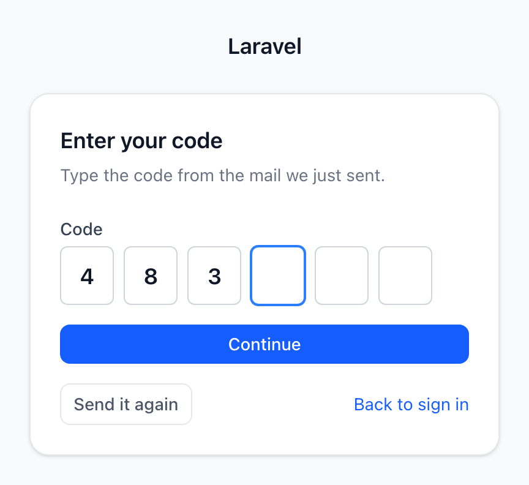
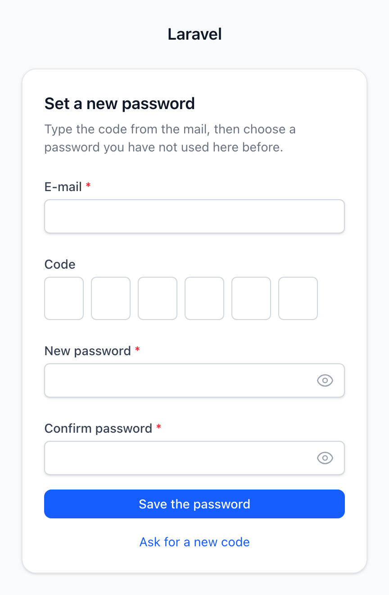

Modules
Modul přihlášení
Přihlášení, obnova hesla, ověření e-mailu a dvoufázová výzva v designu panelu — obrazovky, o které si Laravel Fortify říká aplikaci.


Routuje se jen tam, kde je zapnuté Features::registration() — pole jsou AuthForms::register(), takže název firmy je closure, ne publikovaný view.

Obrazovka, která vypadá odhlášeně, ale stojí za ní přihlášený uživatel. Cesta ven je na ní, protože obrazovka, ze které se nedá odejít, je past.

Jedna obrazovka pro tři toky — přihlášení bez hesla, druhý faktor e-mailem, potvrzení adresy. Políčka se posouvají sama a odešlou jednu hodnotu.

Žádné pole s tokenem: v e-mailu je kód, jehož řádek nese token brokeru, a samotnou obnovu dělá pořád Fortify.
Na této stránce
- Jak to funguje
- Konfigurace
- Co dostanete
- Zapnutí jednotlivých funkcí
- Jednorázové kódy
- Zapnutí od začátku do konce
- Přihlášení kódem
- Druhý faktor e-mailem
- Potvrzení adresy kódem
- Nové heslo z kódu
- Když žádný kód nedorazí
- Kdo dostane druhý faktor e-mailem
- Změna toho, na co se kódové obrazovky ptají
- Testování ve vaší aplikaci
- E-mail s kódem
- Vlastní úložiště
- Dotazy z kódu
- Passkeys
- Zapnutí passkeys
- Co uvidí člověk u obrazovky
- Když passkey nefunguje
- Přizpůsobení obrazovek
- Texty
- Rám
- Pole
- Značkování
- Vlastní obrazovka ve stejném rámu
- Nahrazení jedné obrazovky
- Cesta ven
- Hlídání panelu
- Co nedělá
- Související
Obrazovky na cestě dovnitř. Nainstalujete ho a aplikace má přihlašovací stránku, která vypadá jako panel za ní, cestu k obnově hesla, potvrzení adresy, dvoufázovou výzvu a položku Odhlásit se v uživatelském menu.
composer require nyoncode/wire-module-authphp artisan wire-module-auth:installNeobsahuje žádnou autentizaci. Tu vlastní Laravel Fortify, a právě tohle rozdělení je celý návrh balíčku.
Jak to funguje
Fortify vlastní bezpečnost, tenhle balíček značkování. Ověření přihlašovacích údajů, omezení počtu pokusů podle adresy a IP, regenerace session, která zavírá fixaci, tokeny pro obnovu hesla a jejich expirace, podepsané ověřovací odkazy, okno TOTP a záložní kódy jsou bezpečnostní plocha s udržovaným vlastníkem. Panel, který by je napsal znovu, by tu plochu vlastnil a nezískal tím jedinou funkci.
Fortify je headless: registruje routy a akce a o pohledy si říká aplikaci sedmi
callbacky — Fortify::loginView() a jeho šest sourozenců. Než vznikl tenhle
balíček, odpovídala si na ně aplikace sama — nebo, mnohem častěji, neodpověděla
vůbec a nainstalovala celý panel bez možnosti se do něj přihlásit. Ta mezera je
přesně sedm pohledů široká a tenhle balíček je těch sedm pohledů.
Odpovídá se na všech sedm, bezpodmínečně. Které obrazovky existují, je
otázka pro Fortify, ne pro tenhle balíček: registrace, obnova hesla, ověření
e-mailu a dvoufázové ověření jsou položky ve fortify.features a na pohled pro
vypnutou funkci se nikdy nesměruje. Podmínit registrace tady by znamenalo druhou
kopii toho seznamu, která s ním může nesouhlasit.
Pole jsou z wire-forms, odesílá je prohlížeč. Každý input na těchhle
obrazovkách pochází ze schématu deklarovaného v PHP a vykresleného v režimu
nativního odeslání: name a value=old(…) tam, kde by formulář panelu nesl
wire:model, a chyby se čtou ze sdíleného balíku $errors, který Fortify stejně
plní. Jsou to tedy stejná pole, stejná výbava i stejné Alpine jako u formulářů za
dveřmi — včetně přepínače pro odhalení hesla — a přihlášení funguje i s vypnutým
JavaScriptem, protože na kritické cestě ho nic nepotřebuje. Co tím získáte, je
sekce o polích: obrazovka získá pole bez publikovaného pohledu.
Providery aplikace bootují jako poslední, takže vyhrává váš. Pojmenování
vlastního pohledu v provideru aplikace nahradí jeden z těchhle, aniž by vypnulo
zbytek — balíčkové providery bootují dřív než aplikační, takže poslední
Fortify::loginView() patří aplikaci.
Odkazy se kreslí z týchž přepínačů, které vytvářejí routy. Odkaz „Zapomněli
jste heslo?“ se objeví jen tam, kde je zapnuté Features::resetPasswords(),
a odkaz na registraci jen tam, kde Features::registration(). Odkaz na routu,
kterou Fortify nikdy nezaregistroval, je 404, o které se aplikace dozví od
uživatele.
Rám se pojmenovává, nedodává. Obrazovky se vykreslují uvnitř layoutu, který
tenhle balíček nevlastní. Dva rámy by byly stejných čtyřicet řádků dvakrát, které
se rozejdou při první změně jednoho z nich — takže auto se ptá na tři věci
v tomhle pořadí:
- Váš vlastní layout v
resources/views/components/layouts/auth.blade.php, který zapíše instalátor. Je první proto, že rám shellu bere váš stylesheet ze slotuhead— balíček nemůže znát jména vašich Vite entry — takže vykreslení rovnou do rámu shellu dá přihlašovací stránku se značkováním frameworku a bez jediného vašeho stylu, a bez jakékoli chybové hlášky. - Rám shellu,
wire-admin::auth-layout: hlavička, rozhodnutí o motivu ještě před prvním vykreslením a karta, bez jediné položky navigace. Tohle dostane aplikace, která má shell a nikdy nespustila instalátor — chybí styly, zbytek je v pořádku. - Nic, což vyhodí
AuthFrameExceptionmísto vykreslení prázdného jména komponenty.
Odhlášení je řádek v chromu, ne řádek ve vašem layoutu. Přispívá se jím do
PageChrome::USER_MENU, oblasti, kterou shell vykresluje uvnitř uživatelského
menu, a posílá se na vlastní odhlašovací routu Fortify. Modul uživatelů dává do
téže oblasti odkaz na profil, seřazený nad ním. Než ta oblast vznikla, bylo obojí
značkování, které si každá aplikace psala ručně do slotu v layoutu.
Přihlašovací obrazovka před nehlídaným panelem je dekorace. Instalátor řekne,
kterou z těch dvou věcí aplikace má: čte wire-panels.routes.middleware
a upozorní, když v něm auth chybí. Routy psané ručně dostanou tutéž
připomínku — nic tady nedokáže přečíst, v jaké skupině jsou.
Konfigurace
// config/wire-module-auth.php'layout' => 'auto', // 'auto' použije rám shellu, pokud je shell nainstalovaný 'views' => true, // odpovídat na sedm view callbacků Fortify 'user_menu' => true, // dát „Odhlásit se" do uživatelského menu shellu 'codes' => [ // jednorázové kódy, všechny čtyři vypnuté 'login' => false, 'second_factor' => false, 'verify_email' => false, 'reset_password' => false,],Každý klíč má i override přes prostředí — WIRE_AUTH_LAYOUT, WIRE_AUTH_VIEWS
a WIRE_AUTH_USER_MENU — takže nasazení může obrazovky vrátit zpátky aplikaci
nebo je nasměrovat na jiný rám bez druhého konfiguračního souboru.
auto najde nejdřív layout, který zapsal instalátor, potom rám shellu. Bez
obojího vyhodí vykreslení obrazovky AuthFrameException — větu, která jmenuje
tenhle klíč, místo Blade hlášky „unable to locate component“ o vrstvu níž.
Aplikace s vlastním rámem si ho pojmenuje, a to jako komponentu, ne jako
pohled:
'layout' => 'layouts.guest', // resources/views/components/layouts/guest.blade.phpTo, co zapíše instalátor, je obyčejný layout — váš, a k editaci:
{{-- resources/views/components/layouts/auth.blade.php --}}@props(['title' => null]) <x-wire-admin::auth-layout :title="$title ?? config('app.name')"> <x-slot:head> @vite(['resources/css/app.css', 'resources/js/app.js']) </x-slot:head> <x-slot:brand>{{ config('app.name') }}</x-slot:brand> {{ $slot }}</x-wire-admin::auth-layout>Co dostanete
| Obrazovka | Routa | Je tam, když |
|---|---|---|
| Přihlášení | login |
vždy |
| Vytvoření účtu | register |
Features::registration() |
| Žádost o odkaz na obnovu | password.request |
Features::resetPasswords() |
| Nastavení nového hesla | password.reset |
Features::resetPasswords() |
| Potvrzení adresy | verification.notice |
Features::emailVerification() |
| Potvrzení hesla | password.confirm |
vždy |
| Dvoufázová výzva | two-factor.login |
Features::twoFactorAuthentication() |
| Přihlášení kódem | wire-auth.login-code |
codes.login |
| Zadání kódu | wire-auth.login-code.challenge |
codes.login |
| Druhý faktor e-mailem | wire-auth.second-factor |
codes.second_factor |
| Potvrzení adresy kódem | wire-auth.verify-email-code |
codes.verify_email |
| Nové heslo z kódu | wire-auth.reset-code |
codes.reset_password |
| Přihlášení passkeyem | passkey.login |
Features::passkeys() |
A k tomu Odhlásit se v uživatelském menu.
Posledních pět jsou jednorázové kódy a každý z nich je
vypnutý, dokud ho nezapnete: instalace, která nic neřekne, nemá v route:list
řádek navíc.
Zapnutí jednotlivých funkcí
Které obrazovky existují, rozhoduje konfigurace samotného Fortify. Tohle je celé, co aplikace napíše, aby měla panel se zavřenou registrací, otevřenou obnovou hesla a druhým faktorem:
// config/fortify.phpuse Laravel\Fortify\Features; 'features' => [ // Žádné samoobslužné účty: administrační panel bere uživatele // z modulu uživatelů, ne z veřejného formuláře. // Features::registration(), Features::resetPasswords(), Features::emailVerification(), Features::updatePasswords(), Features::twoFactorAuthentication([ // Fortify zapíše tajemství ve chvíli, kdy se vygeneruje QR kód, // takže bez tohohle se uživatel, který panel otevřel a odešel, // počítá jako chráněný. Nechte to zapnuté. 'confirm' => true, 'confirmPassword' => true, ]), ],Nastavení dvoufázového ověření — QR kód, záložní kódy, karta, která ho zapíná — patří profilové stránce modulu uživatelů. Viz Týmy a dvoufázové ověření. Tenhle balíček vlastní jen výzvu na cestě dovnitř.
Jednorázové kódy
Šestimístný kód, poslaný e-mailem, zadaný do stejných políček jako dvoufázová výzva. Čtyři věci, které může zastoupit, a každá je vypnutá, dokud ji nezapnete:
| Tok | Přepínač | Co se změní |
|---|---|---|
| Přihlášení kódem, bez hesla | codes.login |
druhá cesta dovnitř, odkázaná z přihlašovací obrazovky |
| Druhý faktor e-mailem | codes.second_factor |
správné heslo se zastaví u kódu — pro lidi bez autentikátoru |
| Potvrzení adresy kódem | codes.verify_email |
tlačítko na obrazovce „potvrďte adresu", vedle odkazu, který dál funguje |
| Obnova hesla kódem | codes.reset_password |
v e-mailu přijde kód místo odkazu |
Když spěcháte: Zapnutí od začátku do konce je konfigurace, migrace a kontrola e-mailů, a každý tok pod ním projde krok za krokem to, co doopravdy dělá člověk u obrazovky. Zbytek téhle sekce je o tom, co se za tím děje.
Všechno, na co má Fortify odpověď, zůstává Fortify. Na kód poslaný e-mailem ji nemá — passwordless tok v něm není a druhý faktor ověřuje TOTP proti uloženému tajemství — takže kódy jsou jediný kus autentizace, který tenhle balíček vlastní. Zbytek kolem nich je pořád Fortify a stojí za to vědět kudy vedou švy, protože právě ony drží zbytek instalace v chodu:
- Druhý faktor je binding, ne druhá pipeline. Fortify si přihlašovací
pipeline skládá z kontejneru a vytahuje z něj
RedirectsIfTwoFactorAuthenticatable; tenhle balíček na ten kontrakt naváže potomka Fortifyho vlastní třídy. Kontrola hesla, událostFailed, throttling přihlášení i session klíčlogin.idse dědí beze změny — a autentikátor vždy vyhrává: uživatel s potvrzeným TOTP tajemstvím jde na výzvu Fortify, ne na kód. Mailovaná výzva si tuhle otázku položí znovu sama, místo aby věřila, že ji pipeline už vyřešila: obě větve zapisují stejnélogin.id, takže obrazovka, která by kontrolovala jen rozpracované přihlášení, by uživateli s TOTP dovolila vyžádat si mailovaný kód přímým požadavkem — a schránka by zastoupila aplikaci, kterou si nastavil. - Obnova hesla si nechává token brokeru. V e-mailu je kód, v řádku kódu je
token. Zadaný kód předá požadavek Fortifyho vlastnímu
NewPasswordControlleri se skutečným tokenem, takže expirace, jednorázovost iResetsUserPasswordszůstávají tam, kde byly. Šest číslic je krátkodobý klíč k tokenu, který nikdo neuhodne — ne jeho náhrada. - Potvrzení kódem dělá totéž co podepsaný odkaz.
markEmailAsVerified()a pakIlluminate\Auth\Events\Verified— dva řádky, které spouští i Fortifyho vlastní controller, takže cokoli naslouchá, uslyší obě cesty. Odkaz dál funguje. - Kód potvrdí tu adresu, na kterou byl poslán, a žádnou jinou. Zakládá se pod klíčem uživatele, aby přežil úpravu adresy uprostřed toku — jenže přežít neznamená následovat: adresa jede s kódem v payloadu a porovná se dřív, než se příznak nastaví. Jinak by vyžádání kódu, změna adresy a zadání číslic potvrdily adresu, které se nikdy nic neposlalo.
- Kódem se nedá obejít druhý faktor. Passwordless tok skončí u dvoufázové výzvy Fortify pro každého, kdo ji má. Schránka je jeden faktor. To předání záměrně nechává za sebou rozpracované přihlášení a mailovaná výzva ho odmítne ze stejného důvodu, kvůli kterému vzniklo — jinak by hned další požadavek proměnil to odmítnutí zpět v kód, který odmítalo.
Uložený je hash. Kód se vygeneruje, zahashuje stejně, jako Laravel hashuje token pro obnovu hesla, a založí se pod účelem a identifikátorem — takže kód poslaný na potvrzení adresy nejde zadat do přihlašovací výzvy. Ověření kód spotřebuje, ať byl správný, nebo to byl pokus navíc; expirace, počítadlo pokusů na řádku a okno pro opětovné odeslání jsou to, proč je šest číslic vůbec přijatelných.
Počítadlo navyšuje databáze, ne PHP. Na tom rozdílu celé stojí: throttling
na route je klíčovaný podle IP, takže počítadlo na řádku je jediná zbývající
hranice proti hádání přicházejícímu z mnoha adres naráz — a počítadlo, které se
přečte, v PHP se k němu přičte a zapíše se zpátky, by dávku paralelních pokusů
spočítalo jako jeden. codes.length už nemá ani strop: číslice se losují po
jedné místo jednoho čísla doplněného na šířku, takže není co přetéct.
Zapnutí od začátku do konce
Tři kroky a na ten třetí se nejčastěji zapomíná.
1. Zapněte tok. Nic dalšího v konfiguraci měnit nemusíte; nastavení pod přepínači mají použitelné výchozí hodnoty.
// config/wire-module-auth.php'codes' => [ 'login' => false, 'second_factor' => true, // vyžaduje zapnutou dvoufázovou funkci Fortify 'verify_email' => false, 'reset_password' => true, 'length' => 6, 'expires' => 10, // minut 'attempts' => 5, // špatných pokusů, než se kód zahodí 'resend_after' => 60, // sekund, které čeká tlačítko „poslat znovu" 'throttle' => '6,1', // vlastní limiter, ne ten přihlašovací 'table' => 'wire_auth_one_time_codes',],Každý klíč má i override přes prostředí — WIRE_AUTH_CODE_LOGIN,
WIRE_AUTH_CODE_SECOND_FACTOR, WIRE_AUTH_CODE_VERIFY_EMAIL,
WIRE_AUTH_CODE_RESET_PASSWORD a po jednom na každé nastavení pod nimi.
2. Dejte kódům jejich tabulku. Publikuje se, nespouští se z balíčku, protože patří do vašeho schématu:
php artisan vendor:publish --tag=wire-module-auth::migrationsphp artisan migrate3. Ověřte, že e-maily opravdu odcházejí. Každý tok je e-mail; nedoručený kód
vypadá úplně stejně jako špatný kód a balíček ten rozdíl nepozná. Ve vývoji stačí
log driver — kód je pak v storage/logs/laravel.log, což je zároveň způsob, jak
celý tok projít bez schránky:
MAIL_MAILER=logPak se podívejte, co doopravdy máte. about vypíše každý zapnutý tok — a
pojmenuje ten jediný stav, který přepínač vyjádřit neumí: zapnuto a nemůže běžet:
php artisan about --only=wiremoduleauth# One-time codes ..... sign-in, second factor# One-time codes ..... second factor on, but Fortify two-factor is offCo který tok potřebuje od vašeho user modelu, kromě codes.*:
| Tok | Funkce Fortify | User model musí |
|---|---|---|
| Přihlášení kódem | — | používat Notifiable |
| Druhý faktor e-mailem | twoFactorAuthentication() |
používat Notifiable; volitelně implementovat ReceivesLoginCodes |
| Potvrzení adresy kódem | emailVerification() |
používat Notifiable a implementovat MustVerifyEmail |
| Nové heslo z kódu | resetPasswords() |
být to, co už dnes resetuje Laravelův password broker |
Notifiable je na výchozím App\Models\User už dávno. Modelu bez něj se kód
nikdy nepošle — bez chyby, bez e-mailu — a to je první věc ke kontrole, když tok
nedělá vůbec nic.
4. Řekněte to všechno na modelu najednou. Tohle je každý požadavek z tabulky v jedné třídě — traity a rozhraní jsou celé to, co toky chtějí:
namespace App\Models; use Illuminate\Contracts\Auth\MustVerifyEmail;use Illuminate\Database\Eloquent\Factories\HasFactory;use Illuminate\Foundation\Auth\User as Authenticatable;use Illuminate\Notifications\Notifiable;use Laravel\Fortify\TwoFactorAuthenticatable;use NyonCode\WireModuleAuth\Contracts\ReceivesLoginCodes; class User extends Authenticatable implements MustVerifyEmail, ReceivesLoginCodes { use HasFactory; use Notifiable; // aby se kód vůbec dal poslat use TwoFactorAuthenticatable; // aby autentikátor mohl vyhrát nad kódem protected $fillable = ['name', 'email', 'password', 'two_factor_by_mail']; protected $hidden = ['password', 'remember_token', 'two_factor_secret', 'two_factor_recovery_codes']; protected function casts(): array { return [ 'email_verified_at' => 'datetime', 'password' => 'hashed', 'two_factor_by_mail' => 'boolean', ]; } /** Ptá se před každým druhým faktorem e-mailem. Bez rozhraní rozhoduje konfigurace. */ public function wantsLoginCode(): bool { return $this->two_factor_by_mail; }}Povinný pro všechny toky je jen Notifiable; zbytek jsou funkce, které jste si
zapnuli.
Přihlášení kódem
Jeden přepínač a nic dalšího měnit nemusíte:
WIRE_AUTH_CODE_LOGIN=trueCo pak dělá člověk u obrazovky:
- Na přihlašovací obrazovce klikne na Přihlásit se kódem — odkaz se kreslí jen tam, kde je tok zapnutý, takže je to zároveň důkaz, že přepínač zabral.
- Na
/login/codezadá svou adresu a dá Poslat kód. Odpověď je stejná, ať už na té adrese účet je, nebo není. - Přistane na
/login/code/challenge, kde je napsané, kam kód šel, a opíše šest číslic. Poslat znovu pošle další poresend_aftersekundách. - Je přihlášený — přes vlastní
LoginResponseFortify, takže skončí tam, kde končí přihlášení heslem.
Jedna větev stojí za vědomí: člověk s potvrzeným autentikátorem ve čtvrtém kroku přihlášený není. Kód se přijme, session zůstane zavřená a předá se dvoufázové výzvě Fortify — kód do schránky je jeden faktor a nesmí být cestou kolem druhého.
Druhý faktor e-mailem
Pro lidi bez autentikátoru. Zapnuté musí být codes.second_factor i
twoFactorAuthentication() ve Fortify:
- Přihlásí se na
/loginheslem, které měl vždycky. - Místo panelu dostane
/two-factor/codea e-mail s kódem. Rozdělané přihlášení drží vlastní session klíč Fortifylogin.id— heslo bylo ověřené, takže je to přesně stav, ve kterém běží i vlastní výzva Fortify. - Správný kód otevře session, vyvolá
ValidTwoFactorAuthenticationCodeProvideda přistane tam, kam Fortify posílá druhý faktor. Špatný vyvoláTwoFactorAuthenticationFaileda napíše to k poli.
Kdo má potvrzené TOTP tajemství, tuhle obrazovku nikdy neuvidí: jde na výzvu Fortify, protože autentikátor je silnější faktor a nastavoval si ho schválně.
Oba druhy druhého faktoru vyvolávají vlastní události Fortify, takže audit, který chce zaznamenat, který z nich to byl, poslouchá jednou:
namespace App\Providers; use Illuminate\Support\Facades\Event;use Illuminate\Support\ServiceProvider;use Laravel\Fortify\Events\TwoFactorAuthenticationFailed;use Laravel\Fortify\Events\ValidTwoFactorAuthenticationCodeProvided; class AppServiceProvider extends ServiceProvider{ public function boot(): void { Event::listen(ValidTwoFactorAuthenticationCodeProvided::class, function ($event): void { // Kód z e-mailu, nebo z aplikace: uživatel bez TOTP tajemství // odpověděl na ten, který poslal tenhle balíček. activity()->causedBy($event->user)->log( $event->user->two_factor_secret ? 'přihlášení kódem z aplikace' : 'přihlášení kódem z e-mailu', ); }); Event::listen(TwoFactorAuthenticationFailed::class, fn ($event) => logger()->warning( 'druhý faktor odmítnut', ['user' => $event->user->getKey()], )); }}Potvrzení adresy kódem
Vedle podepsaného odkazu, ne místo něj — pro poštovního klienta, který URL přepsal, nebo pro odkaz otevřený na jiném stroji:
- Přihlášený, nepotvrzený uživatel je na obrazovce Potvrďte svou e-mailovou
adresu od Fortify. Se zapnutým
codes.verify_emailna ní je i Zadat kód místo odkazu. - Stisknutí pošle kód a přesune ho na
/email/verify/code. - Správný kód označí adresu za ověřenou a vyvolá
Verified— tytéž dva řádky, které spouští vlastní controller Fortify u podepsaného odkazu, takže uvítací e-mail nebo záznam v auditu uslyší obě cesty.
Váš user model musí implementovat MustVerifyEmail, jinak není co potvrzovat a
obě obrazovky pošlou návštěvníka domů.
Potvrzení adresy znamená něco jen tam, kde je do té doby něco zavřené — a to je tady middleware, ne nastavení:
// config/wire-panels.php'routes' => [ 'enabled' => true, 'middleware' => ['web', 'auth', 'verified'], ],Nové heslo z kódu
Tok s nejvíc pohyblivými díly a nejmíň prací pro vás: zapněte
codes.reset_password a stávající obrazovky pro obnovu hesla změní tvar.
- Člověk požádá o obnovu na
/forgot-password, přesně jako dosud. - V e-mailu přijde kód místo odkazu. Laravelův broker svůj token vygeneroval pořád stejně; nese ho řádek toho kódu.
- Přistane na
/reset-password-codes předvyplněnou adresou — tenhle tok ji jako jediný zná a jede v session, ne v URL, takže se nedostane do access logu. - Zadá kód a nové heslo. Kód se kontroluje první, takže špatný stojí jeden pokus
a nic víc; pak běží vlastní
NewPasswordControllerFortify se skutečným tokenem a pravidla na heslo, verdikt brokeru iResetsUserPasswordsjsou ta, která jste měli doteď.
Na té obrazovce není pole s tokenem, a to je záměr: token je to, co kód zastupuje. Obrazovka s obojím by byla obrazovka, kde je kód ozdoba.
Se zapnutým tokem se nahrazují dva bindingy — Laravelův
ResetPassword::toMailUsing() a SuccessfulPasswordResetLinkRequestResponse z
Fortify. Pokud si některý navazuje vaše aplikace, její provider bootuje poslední
a vyhraje — a kódy pak nemají čím jet.
Jeden binding naopak musí být váš, a je to ten, který Fortify záměrně nechává
nenavázaný — co obnova hesla doopravdy zapíše. Instalátor laravel/fortify ho
publikuje; aplikace, která si Fortify drátovala ručně, ho musí dodat, jinak
obě obrazovky pro obnovu spadnou na chybě kontejneru, ne na něčem o kódech:
namespace App\Providers; use App\Actions\Fortify\ResetUserPassword;use Illuminate\Support\ServiceProvider;use Laravel\Fortify\Contracts\ResetsUserPasswords; class FortifyServiceProvider extends ServiceProvider{ public function register(): void { $this->app->singleton(ResetsUserPasswords::class, ResetUserPassword::class); }}Když žádný kód nedorazí
V pořadí, ve kterém to má smysl kontrolovat, protože každá z těch věcí selhává potichu:
- Je tok vůbec zaroutovaný?
php artisan route:list --name=wire-authmá vypsat obrazovky ke každému zapnutému přepínači. Prázdno znamená vypnutý přepínač — nebo, u druhého faktoru a ověření adresy, vypnutou odpovídající funkci Fortify. - Odcházejí z téhle aplikace e-maily? Dokud nedorazí
Mail::raw('x', fn ($m) => $m->to('vy@example.com')->subject('x')), je všechno ostatní jen odhad. - Není v tom fronta? E-mail s kódem záměrně ve frontě není, ale vlastní
notifikace se
ShouldQueuezOneTimeCodeNotification::toMailUsing()potřebuje workera — a kód, který dorazí o čtyři minuty později, je kód po expiraci. - Neodešel právě jeden? Uvnitř
resend_afterto tlačítko řekne a nepošle nic — schválně, aby zmáčknuté tlačítko neposlalo pět kódů, ze kterých čtyři už neplatí. - Používá model
Notifiable? Bez něj se nepošle nikdy nic a všechny obrazovky přesto tvrdí, že je kód na cestě. - Není kód prostě špatný nebo po expiraci? Odpověď je záměrně stejná. Po
attemptsšpatných pokusech se kód zahodí, takže přestanou fungovat i správné číslice — vyžádejte si nový.
Kdo dostane druhý faktor e-mailem
Ve výchozím stavu odpovídá konfigurace za všechny: každý uživatel bez potvrzeného
autentikátoru. Model, který chce rozhodovat účet po účtu, implementuje jednu
metodu — a balíček, který by kvůli tomu zapsal sloupec do vaší tabulky users,
je přesně to, čemu se tím vyhýbáme:
namespace App\Models; use Illuminate\Foundation\Auth\User as Authenticatable;use NyonCode\WireModuleAuth\Contracts\ReceivesLoginCodes; class User extends Authenticatable implements ReceivesLoginCodes{ public function wantsLoginCode(): bool { // Vlastní sloupec, role, pravidlo o zaměstnaneckých účtech — cokoli, // kde ta odpověď žije. `false` tady znamená přihlášení jen heslem. return $this->two_factor_by_mail; } }Změna toho, na co se kódové obrazovky ptají
Kódové obrazovky jsou AuthForms jako každá jiná tady, takže políčka jsou pole,
které se dá vyměnit, ne markup, který byste museli publikovat. AuthForm::Code je
jeden case pro tři obrazovky — passwordless výzvu, druhý faktor e-mailem i
potvrzení adresy — protože aplikace, která má osmimístné kódy, to myslí na všechny
tři:
namespace App\Providers; use Illuminate\Support\ServiceProvider;use NyonCode\WireForms\Components\OtpInput;use NyonCode\WireModuleAuth\Forms\AuthForm;use NyonCode\WireModuleAuth\Forms\AuthForms; class AppServiceProvider extends ServiceProvider{ public function boot(): void { // Osm políček, po třech, aby to sedělo s `'length' => 8` v konfiguraci — // pole kreslí to, co úložiště generuje, a musí se shodnout. app(AuthForms::class)->extend(AuthForm::Code, fn (array $fields): array => [ OtpInput::make('code') ->label(__('Váš kód')) ->length(8) ->separator(3) ->numericOnly() ->autofocus(), ]); // Adresa na passwordless obrazovce tam, kde se lidé přihlašují osobním číslem. app(AuthForms::class)->extend( AuthForm::LoginCode, fn (array $fields): array => [...$fields, /* … */], ); }}Pravidlo, které každé rozšíření dodržuje, je z ADR 0036: pole, které neumí odeslat nativně, je při renderu odmítnuté jménem — místo aby neposlalo nic.
Testování ve vaší aplikaci
Kód existuje na jediném místě — v notifikaci na cestě ven — takže si ho test přečte stejně, jako si ho člověk přečte v mailu:
use Illuminate\Support\Facades\Notification;use NyonCode\WireModuleAuth\Enums\CodePurpose;use NyonCode\WireModuleAuth\Notifications\OneTimeCodeNotification; it('přihlásí kódem z e-mailu', function () { Notification::fake(); $user = User::factory()->create(['email' => 'ann@example.com']); $this->post('/login/code', ['email' => 'ann@example.com']) ->assertRedirect(route('wire-auth.login-code.challenge')); Notification::assertSentTo($user, OneTimeCodeNotification::class); $code = Notification::sent($user, OneTimeCodeNotification::class) ->first()->code->code; // číslice, jednou $this->post('/login/code/challenge', ['code' => $code]) ->assertRedirect(config('fortify.home')); expect(auth()->id())->toBe($user->getKey());});Obnova hesla je výjimka a stojí za to vědět proč. Její kód vzniká uvnitř
mailu, který posílá Laravelův broker — v jediném okamžiku, kdy token existuje —
takže Notification::fake() ten mail nikdy nesestaví a žádný kód nevznikne. Test
napsaný takhle prochází proti toku, který neudělal nic. Přečtěte si ho z
úložiště:
use NyonCode\WireModuleAuth\Contracts\OneTimeCodes;use NyonCode\WireModuleAuth\Enums\CodePurpose;use NyonCode\WireModuleAuth\ValueObjects\OneTimeCode; it('nastaví nové heslo z kódu v e-mailu', function () { $issued = null; // Dekorátor nad skutečným úložištěm: pořád se hashuje, expiruje a // počítají se pokusy — tohle si jen nechá číslice, které si databáze // záměrně nenechává. // Uzávěr s `use (&$issued)`, nikdy arrow funkce: `fn () =>` zachytává // hodnotou, takže parametr konstruktoru předávaný referencí níž by se navázal // na kopii a `$issued` by v aserci pořád bylo null. app()->extend(OneTimeCodes::class, function (OneTimeCodes $codes) use (&$issued) { return new class($codes, $issued) implements OneTimeCodes { public function __construct(private OneTimeCodes $codes, public ?OneTimeCode &$last) {} public function issue(CodePurpose $purpose, string $identifier, array $payload = []): OneTimeCode { return $this->last = $this->codes->issue($purpose, $identifier, $payload); } public function verify(CodePurpose $purpose, string $identifier, string $code): ?OneTimeCode { return $this->codes->verify($purpose, $identifier, $code); } public function recentlyIssued(CodePurpose $purpose, string $identifier): bool { return $this->codes->recentlyIssued($purpose, $identifier); } public function invalidate(CodePurpose $purpose, string $identifier): void { $this->codes->invalidate($purpose, $identifier); } }; }); User::factory()->create(['email' => 'ann@example.com']); $this->post('/forgot-password', ['email' => 'ann@example.com']); $this->post('/reset-password-code', [ 'email' => 'ann@example.com', 'code' => $issued->code, 'password' => 'a-brand-new-one', 'password_confirmation' => 'a-brand-new-one', ])->assertSessionHasNoErrors();});E-mail s kódem
Pro každý tok vlastní text, v wire-module-auth::messages.code_mail.*, aby „tady
je váš přihlašovací kód" a „potvrďte tuhle adresu" byly různé věty. Měníte je
stejně jako kterýkoli jiný text těchhle obrazovek — Texty — nebo si
vezmete celou zprávu:
namespace App\Providers; use Illuminate\Notifications\Messages\MailMessage;use Illuminate\Support\ServiceProvider;use NyonCode\WireModuleAuth\Notifications\OneTimeCodeNotification;use NyonCode\WireModuleAuth\ValueObjects\OneTimeCode; class AppServiceProvider extends ServiceProvider{ public function boot(): void { OneTimeCodeNotification::toMailUsing( fn (mixed $notifiable, OneTimeCode $code): MailMessage => (new MailMessage) ->subject(__('Váš kód pro :app', ['app' => config('app.name')])) ->markdown('mail.code', [ 'code' => $code->code, // číslice, čitelné tady a nikde jinde 'purpose' => $code->purpose, // CodePurpose::Login, SecondFactor, … 'expiresAt' => $code->expiresAt, ]), ); }}Notifikace záměrně není ve frontě: kód po deseti minutách nemá cenu a
nespuštěná fronta udělá z „kód mi nepřišel" hlášení o rozbitém přihlašování.
Aplikace s funkční frontou vrátí z toho callbacku vlastní notifikaci se
ShouldQueue.
Vlastní úložiště
Kódy žijí za jedním rozhraním. Navažte si vlastní implementaci, ať už je chcete držet v Redisu s TTL, nebo je předat bráně, která zároveň pošle SMS — žádný ze čtyř toků o tom nemusí vědět:
namespace NyonCode\WireModuleAuth\Contracts; use NyonCode\WireModuleAuth\Enums\CodePurpose;use NyonCode\WireModuleAuth\ValueObjects\OneTimeCode; interface OneTimeCodes{ /** @param array<string, mixed> $payload */ public function issue(CodePurpose $purpose, string $identifier, array $payload = []): OneTimeCode; public function verify(CodePurpose $purpose, string $identifier, string $code): ?OneTimeCode; public function recentlyIssued(CodePurpose $purpose, string $identifier): bool; public function invalidate(CodePurpose $purpose, string $identifier): void;}Čtyři pravidla, která implementace musí dodržet, protože se na ně toky
spoléhají místo aby je kontrolovaly znovu: čitelný kód existuje jen v tom, co
vrátí issue(), kód patří ke svému účelu i identifikátoru, ověření kód
spotřebuje a vypršelý kód je k nerozeznání od špatného — null pro každou
podobu „ne".
namespace App\Auth; use Illuminate\Support\Facades\Hash;use Illuminate\Support\Facades\Redis;use NyonCode\WireModuleAuth\Contracts\OneTimeCodes;use NyonCode\WireModuleAuth\Enums\CodePurpose;use NyonCode\WireModuleAuth\ValueObjects\OneTimeCode; class RedisOneTimeCodes implements OneTimeCodes{ public function issue(CodePurpose $purpose, string $identifier, array $payload = []): OneTimeCode { $code = str_pad((string) random_int(0, 999999), 6, '0', STR_PAD_LEFT); $expiresAt = now()->addMinutes(10); // TTL je expirace: není co uklízet a kód, který přežije svůj klíč, // nemůže existovat. Redis::setex($this->key($purpose, $identifier), 600, json_encode([ 'code' => Hash::make($code), 'payload' => $payload, 'attempts' => 0, 'issued_at' => now()->timestamp, ])); return new OneTimeCode($purpose, $identifier, $code, $expiresAt, $payload); } public function verify(CodePurpose $purpose, string $identifier, string $code): ?OneTimeCode { // Špatný, po expiraci, nikdy nevydaný, o pokus navíc: všechno `null`, // protože ten rozdíl je užitečný jen tomu, kdo hádá. // … } public function recentlyIssued(CodePurpose $purpose, string $identifier): bool { // … } public function invalidate(CodePurpose $purpose, string $identifier): void { Redis::del($this->key($purpose, $identifier)); } private function key(CodePurpose $purpose, string $identifier): string { // Účel je součást adresy, ne nálepka: kód poslaný na potvrzení adresy // nesmí otevřít přihlašovací výzvu. return "wire-auth:{$purpose->value}:{$identifier}"; }}// app/Providers/AppServiceProvider.php, v register()$this->app->bind( NyonCode\WireModuleAuth\Contracts\OneTimeCodes::class, App\Auth\RedisOneTimeCodes::class, );Hodnota, kterou obě metody vracejí, je OneTimeCode: purpose, identifier,
code (na cestě z verify() prázdný), expiresAt a payload(string $key) na
to, co si tok nesl — token brokeru u obnovy hesla jede právě tam.
Dotazy z kódu
Support\Codes odpovídá na to, co tahle instalace má — přesně na to se ptají
obrazovky, než vykreslí odkaz na routu, která nemusí existovat:
use NyonCode\WireModuleAuth\Support\Codes; Codes::login(); // přihlášení kódem, bez heslaCodes::secondFactor(); // a dvoufázová funkce Fortify je zapnutáCodes::verifyEmail(); // a Fortify routuje ověření adresyCodes::resetPassword(); // a Fortify routuje obnovu heslaCodes::any(); // kterýkoli ze čtyřCodes::secondFactorIsStranded(); // zapnuto, ale funkce Fortify je vypnutáCodes::wantedBy($user); // tomuhle uživateli se posílá druhý faktorCodes::usesAuthenticatorApp($user);Codes::identifierFor($user); // nebo adresa, normalizovanáPasskeys
Passkey je vlastní přihlašovací údaj platformy — Touch ID, Windows Hello, telefon,
bezpečnostní klíč — a přihlášení jím je otisk prstu místo hesla. Laravel má
celé: Fortify routuje ceremonii přes laravel/passkeys za Features::passkeys()
a @laravel/passkeys je klient do prohlížeče. Tenhle framework přidává dvě místa,
kde to člověk potká: tlačítko na přihlašovací obrazovce a kartu na profilu, která
vypíše jeho klíče.
Nic tady neimplementuje WebAuthn. Challenge, relying party, ověření podpisu,
řádky s přihlašovacími údaji i session patří těm balíčkům; prohlížečovou půlku
dělá Laravelův vlastní npm klient zabalený do bundlu ve wire-core. Vlastnoručně
napsaná ceremonie by byla paralelní implementace bezpečnostního protokolu, která
se rozejde s originálem u první zvláštnosti prohlížeče — takže tohle je adaptér, a
tenký: wirePasskey je příznak busy, hláška a informace, kam pak jít.
Tlačítko se kreslí z přepínače, který ceremonii routuje — stejně jako každý
jiný odkaz na přihlašovací obrazovce. S vypnutým Features::passkeys() tlačítko
není, a v prohlížeči, který WebAuthn neumí, taky ne: chybět je lepší než být tam a
nefungovat, a formulář s heslem je na téže obrazovce.
Bundle jde po obrazovkách, ne po stránkách. Laravelův klient je v něm zabalený,
takže deklarovat ho by znamenalo 12 kB v <head> každé stránky každé aplikace kvůli
funkci, kterou většina z nich má vypnutou. Obě obrazovky, které passkey kreslí,
proto includují wire-core::partials.passkey-assets a Livewire z toho udělá jeden
tag.
Zapnutí passkeys
1. Tabulky. laravel/passkeys chodí s Fortify; jeho migrace se publikuje jako
každá jiná:
php artisan vendor:publish --tag=passkeys-migrationsphp artisan migrate2. Funkce. Jeden řádek ve výčtu Fortify, vedle těch, které už máte:
// config/fortify.phpuse Laravel\Fortify\Features; 'features' => [ Features::resetPasswords(), Features::twoFactorAuthentication(['confirm' => true]), Features::passkeys(), ],3. Model. Dva řádky — a právě ty, jejichž chybění je tiché: všechny routy odpovídají a klíč, který se zaregistruje, nepatří nikomu:
namespace App\Models; use Illuminate\Foundation\Auth\User as Authenticatable;use Laravel\Passkeys\Contracts\PasskeyUser;use Laravel\Passkeys\PasskeyAuthenticatable; class User extends Authenticatable implements PasskeyUser { use PasskeyAuthenticatable; }Trait čte z modelu name a email — autentikátory je ukazují v dialogu platformy
a ve výběru účtu — a padá zpátky na auth identifikátor. getPasskeyDisplayName() a
getPasskeyUsername() jsou místa, kde aplikace s jiným uložením řekne, kde ty
hodnoty jsou.
4. Origin, pokud nejste na produkční doméně. WebAuthn je na origin navázaný a relying party, která nesouhlasí s adresou, ze které se stránka servíruje, selže uvnitř prohlížeče dřív, než se cokoli z tohohle spustí:
// config/passkeys.php'relying_party_id' => parse_url(config('app.url'), PHP_URL_HOST),'allowed_origins' => [config('app.url')],Ve vývoji choďte na localhost, ne na 127.0.0.1. Výjimka WebAuthn pro
bezpečný kontext je psaná pro to jméno a Laravelův klient adresu rovnou odmítne:
„Passkeys can't be used on 127.0.0.1. For local development, use localhost."
Všude jinde je pravidlo prostší — passkeys potřebují HTTPS.
Přes npm se instalovat nemusí nic. Klient do prohlížeče je zabalený v bundlu
wire-core, který obě obrazovky emitují.
Co uvidí člověk u obrazovky
Přihlášení:
- Na přihlašovací obrazovce je pod tlačítkem s heslem Přihlásit se passkeyem.
- Stisknutí otevře vlastní dialog platformy — otisk, obličej, PIN, telefon. Nic na stránce ten dialog nenastyluje, neuspěchá ani nepodvrhne.
- Je přihlášený a přistane tam, kam Fortify posílá přihlášení.
Žádná adresa se předtím nezadává, a to je celý smysl: discoverable credential už
ví, ke kterému účtu patří. Pole s e-mailem navíc nese autocomplete token
webauthn, takže prohlížeče s conditional UI nabídnou uložené passkeys ve vlastní
nabídce hned po kliknutí do pole — a kde to neumí, pořád je tam tlačítko.
Správa na profilu:
- Karta Passkeys vypíše, co účet má, i s datem přidání.
- Přidat passkey vezme jméno zařízení — „MacBook", „pracovní telefon" — a otevře stejný dialog platformy.
- Odebrat smaže klíč vlastní akcí balíčku, takže se vyvolá
PasskeyDeletedpro cokoli, co naslouchá.
Karta patří wire-module-users, vedle karty s dvoufázovým ověřením, protože jde o
vlastní účet přihlášeného člověka: viz Týmy a dvoufázové
ověření.
Když passkey nefunguje
- Na přihlašovací obrazovce není tlačítko. Buď
Features::passkeys()není ve výčtu Fortify, nebo prohlížeč WebAuthn neumí — ovládací prvek visí nax-show="supported", což je odpověď samotného klienta. - „Passkeys can't be used on 127.0.0.1." Choďte na
localhost, nebo servírujte přes HTTPS. - Dialog se otevře a přihlášení pak selže. Kontrolujte relying party a origin:
passkeys.relying_party_idmusí být host, ze kterého se stránka servíruje, apasskeys.allowed_originsmusí obsahovat i schéma a port. - Karta hlásí chybějící trait.
PasskeyAuthenticatableaPasskeyUsernejsou na user modelu, takže není kam klíč uložit. Tohle je jediné selhání, které karta hlásí sama — protože bez nich všechny routy odpovídají. - Přidání passkeye si nejdřív řekne o heslo. To je
passkeys.management_middleware— ve výchozím stavupassword.confirm, což je pro aplikaci správně a dá se to zvolnit.
Přizpůsobení obrazovek
Pět příček, od nejlevnější, a každá si nechává ty pod sebou: změna jednoho slova neznamená vlastnit formulář, přidání pole neznamená vlastnit značkování kolem něj a vlastnictví jedné obrazovky neznamená vlastnit zbylých šest.
| Co chcete změnit | Sáhněte po | Co pak vlastníte |
|---|---|---|
| Slovo, nadpis, jazyk | lang/vendor/wire-module-auth/ |
klíče, které jste napsali |
| Stránku kolem karty | wire-module-auth.layout |
vlastní layout |
| Pole ve formuláři | AuthForms::extend() |
closure, kterou jste napsali |
| Značkování kolem nich | publikované pohledy | pohledy, které jste si nechali |
| Celou obrazovku | Fortify::loginView() |
tu jednu obrazovku |
Texty
Každý řetězec na těchhle obrazovkách je klíč v wire-module-auth::messages —
popisky, nadpisy, věta pod každým nadpisem, odkazy, „Odhlásit se“. Laravel slučuje
soubor aplikace přes soubor balíčku, klíč po klíči, takže celou změnou je
soubor, ve kterém je jen to, s čím nesouhlasíte:
// lang/vendor/wire-module-auth/en/messages.phpreturn [ 'sign_in_heading' => 'Přihlášení pro zaměstnance', 'sign_in_description' => 'Účty vydává kancelář; registrace tu není.', 'remember_me' => 'Zůstat přihlášen na tomhle zařízení',];Instalátor publikuje oba dodávané jazyky celé a tag udělá totéž sám o sobě. Úplná
kopie je snadný začátek a zlozvyk: klíč, který jste nezměnili, je klíč, který
přestal sledovat balíček — ořežte tedy soubor na řádky, které jste mysleli vážně.
Jazyk, který balíček nedodává — dodává en a cs — je adresář vedle nich, ne
fork, a klíč, který v něm chybí, spadne zpátky na fallback_locale:
php artisan vendor:publish --tag=wire-module-auth::translations# lang/vendor/wire-module-auth/{en,cs}/messages.php — vedle nich přidejte de/, pl/, …Rám
Layout, ve kterém se obrazovky vykreslují, je jeden klíč konfigurace — a je to změna, kterou je potřeba udělat dřív než jakoukoli jinou: právě ta dostane váš styl, vaši značku a vaše pozadí na všech sedm najednou, aniž byste sáhli na jediný pohled. Viz Konfigurace výše.
Pole
Inputy už nejsou značkování. Každé pole na těchhle obrazovkách je pole
z wire-forms deklarované v PHP, v Forms\AuthForms, vykreslené v režimu
nativního odeslání — nese name a value=old(…) místo wire:model, takže
formulář odesílá prohlížeč přesně tak, jako když bylo značkování psané ručně.
Přidání pole na přihlašovací obrazovku je díky tomu closure v provideru, ne
publikovaný pohled, který pak vlastníte navždycky:
namespace App\Providers; use Illuminate\Support\ServiceProvider;use NyonCode\WireForms\Components\TextInput;use NyonCode\WireModuleAuth\Forms\AuthForm;use NyonCode\WireModuleAuth\Forms\AuthForms; class AppServiceProvider extends ServiceProvider{ public function boot(): void { app(AuthForms::class)->extend( AuthForm::Register, // Dovnitř pole, jak jsou deklarovaná; ven to, co se má vykreslit. // Přidejte k nim, nahraďte jedno, zahoďte jedno, nebo vraťte vlastní. fn (array $fields): array => [ ...$fields, TextInput::make('company') ->label(__('Firma')) ->required() ->autocomplete('organization'), ], ); }}Callbacky běží v pořadí registrace, každý nad tím, co vrátil ten předchozí, a provider aplikace bootuje až po všech balíčkových — takže se tohle s modulem, který si přidává vlastní pole, skládá, místo aby s ním závodilo.
Case AuthForm |
Obrazovka | S čím se dodává |
|---|---|---|
Login |
Přihlášení | email (podle toho, co pojmenovává fortify.username), password, remember |
Register |
Vytvoření účtu | name, email, password, password_confirmation |
ForgotPassword |
Žádost o odkaz na obnovu | email |
ResetPassword |
Nastavení nového hesla | token (skrytý), email, password, password_confirmation |
ConfirmPassword |
Potvrzení hesla | password |
TwoFactorCode |
Dvoufázová výzva | code, jako šest políček |
TwoFactorRecovery |
Dvoufázová výzva | recovery_code |
Poslední obrazovka má dva casy, protože je to jeden formulář odesílaný na jednu URL s jiným polem podle toho, co má člověk po ruce — a náhrada inputu na kód není důvod zdědit i to, co jste udělali s tím záložním.
Pole pro identitu se řídí fortify.username: přebírá jeho jméno a inputem
type="email" je jen tam, kde se to jméno jmenuje email. Formátové pravidlo
prohlížeče na poli s osobními čísly odmítne každou hodnotu, pro kterou ho
aplikace nastavila — a řekne to vlastními slovy dřív, než se cokoli odešle.
Dostat input na stránku je půlka nového pole. Co s hodnotou udělá požadavek,
je věc akce ve Fortify a vždycky byla: Fortify::createUsersUsing() je místo, kde
se zapisuje sloupec čtený při registraci, a pole přidané tady bez toho, abyste
o něm té akci řekli, je input, jehož hodnotu nikdo nevaliduje a nikdo neukládá.
Pole, které by prohlížeč neuměl odeslat, je při vykreslení odmítnuté, jménem,
výjimkou FormConfigurationException. Cokoli, co uprostřed formuláře potřebuje
roundtrip, se váže jen přes Livewire a nenese name — pole s live(), Select
hledající na serveru, FileUpload, Repeater — takže na téhle straně dveří by
vykreslilo input, který tiše odešle prázdnou hodnotu. Výjimka se jménem pole je
levnější verze téhle zkušenosti. Viz
přehled formulářů.
Formuláře se dají číst i z vlastních pohledů, a právě to dělá náhradní obrazovku levnou — viz níž:
app(AuthForms::class)->login(); // Form z wire-forms, připravený k vypsáníapp(AuthForms::class)->resetPassword($token, $email); // co nesl odkaz z mailuZnačkování
php artisan vendor:publish --tag=wire-module-auth::viewsDevět pohledů přistane v resources/views/vendor/wire-module-auth/, kam se Laravel
dívá dřív než do balíčku. Jeden stojí za přečtení dřív, než začnete editovat cokoli
dalšího: screen.blade.php — volání rámu, nadpis, věta pod ním, stavová
hláška z session od Fortify a souhrn chyb. Všech sedm obrazovek se vykresluje skrz
něj, takže změna tady je změnou každé z nich.
Co v těch pohledech naopak už není, jsou pole: každá obrazovka vypíše objekt
formuláře a vlastní jen výbavu kolem něj — <form>, @csrf, odesílací tlačítko,
odkazy. Publikování je tedy na změnu téhle výbavy a
sekce výš je na změnu inputů.
Publikování zkopíruje všech devět a kopie přestane sledovat balíček. Oprava vydaná v balíčku se dostane do jeho pohledu, ne do vašeho, a na stránce po ní není žádná chyba — jen značkování z minulé verze, které se vykresluje v pořádku. Smažte tedy soubory, kvůli kterým jste nepřišli, a nechte si ty, kvůli kterým ano.
Vlastní obrazovka ve stejném rámu
<x-wire-module-auth::screen> je šev mezi obrazovkou a jejím rámem a vaše vlastní
pohledy se v něm můžou vykreslovat. Zůstane vám tím vyhodnocení layoutu, nadpis,
stavová hláška od Fortify („odkaz je na cestě“) i souhrn chyb, který ohlásí
neúspěšné přihlášení tam, kde ho uživatel uvidí — chyba přihlášení je hlášená pod
email bez ohledu na to, které pole bylo špatně, takže hláška vykreslená jen pod
vlastním inputem je hláška pod tím nesprávným.
Pole můžou přijít odtamtud, odkud si je bere dodávaná obrazovka, takže vlastní
pohled je jen výbava a nic víc — nebo si
Form postavíte sami a zavoláte na něm ->nativeSubmit():
{{-- resources/views/auth/login.blade.php --}}<x-wire-module-auth::screen :title="__('Přihlášení')" :heading="__('Přihlášení pro zaměstnance')" :description="__('Použijte adresu, kterou vám vydala kancelář.')"> <form method="POST" action="{{ route('login') }}" class="space-y-4"> @csrf {{-- Stejná pole, jaká vykresluje dodávaná obrazovka, i s rozšířeními. --}} {{ app(\NyonCode\WireModuleAuth\Forms\AuthForms::class)->login() }} <x-wire::button type="submit" class="w-full">{{ __('Přihlásit se') }}</x-wire::button> </form></x-wire-module-auth::screen>Pak ji pojmenujte, stejně jako sekce níž pojmenovává jakoukoli náhradu:
Fortify::loginView('auth.login').
Na co smí obrazovka odkazovat, odpovídá Fortify, ne vy — a
NyonCode\WireModuleAuth\Support\Screens je místo, kde se na to ptát:
use NyonCode\WireModuleAuth\Support\Screens; Screens::canRegister(); // Features::registration()Screens::canResetPassword(); // Features::resetPasswords()Screens::mustVerifyEmail(); // Features::emailVerification()Screens::hasTwoFactor(); // Features::twoFactorAuthentication()Screens::canSignOut(); // Route::has('logout') — odhlášení není featureZeptejte se dřív, než odkaz vykreslíte. „Zapomněli jste heslo?“ pod formulářem, jehož routu Fortify nikdy nezaregistrovalo, je 404, o které se aplikace dozví od uživatele.
Nahrazení jedné obrazovky
Zaregistrujte vlastní pohled v provideru aplikace. Aplikační providery bootují až po všech balíčkových, takže platí ten váš:
namespace App\Providers; use Illuminate\Support\ServiceProvider;use Laravel\Fortify\Fortify; class FortifyServiceProvider extends ServiceProvider{ public function boot(): void { // Jen tuhle jednu. Zbylých šest zůstane tak, jak je modul // zaregistroval, takže nahrazení přihlašovací obrazovky // neznamená vlastnit i obnovu hesla a dvoufázovou výzvu. Fortify::loginView('auth.login'); }}Nebo vraťte všech sedm zpátky pomocí 'views' => false.
Cesta ven
'user_menu' => false vyndá „Odhlásit se“ z uživatelského menu shellu — pro
aplikaci, která si slot toho menu vyplňuje
ručně, nebo pro tu, jejíž cesta ven je někde úplně jinde. Vaše vlastní řádky
přicházejí stejnou cestou jako řádek tohohle balíčku a pořadí drží sort, protože
tuhle oblast nevlastní nikdo: modul uživatelů přispívá odkazem na profil se 10,
tenhle balíček odhlášením se 100.
namespace App\Providers; use Illuminate\Support\ServiceProvider;use NyonCode\WireCore\Foundation\View\PageChrome; class AppServiceProvider extends ServiceProvider{ public function boot(): void { $this->app->make(PageChrome::class)->add( 'menu.support', // resources/views/menu/support.blade.php PageChrome::USER_MENU, sort: 50, // za Profilem (10), před Odhlásit se (100) ); }}Do toho pohledu dejte <x-wire::menu-item> — komponentu, kterou používá i samotný
řádek s odhlášením — a bude vypadat jako menu, ve kterém sedí, aniž by závisel na
shellu, který ho kreslí.
Hlídání panelu
Routy, které registruje wire-panels, ve výchozím stavu vyžadují přihlášeného
uživatele:
// config/wire-panels.php'routes' => [ 'enabled' => true, 'middleware' => ['web', 'auth'], // výchozí hodnota ],Routy psané ručně berou tytéž tři argumenty skupiny — makro registruje uvnitř té skupiny, ve které ho zavoláte:
// routes/web.phpuse Illuminate\Support\Facades\Route; Route::middleware(['web', 'auth', 'verified']) ->prefix('admin') ->group(function (): void { Route::wireResources(); });auth pošle nepřihlášeného návštěvníka na routu jménem login, což je právě ta
routa, na kterou odpovídá první obrazovka tohohle balíčku.
Co nedělá
Autorizaci. Být přihlášený není totéž jako mít oprávnění. Každá kontrola
v tomhle stacku je Gate::allows() a kdo smí vidět který resource, řeší
Autorizace.
Profilovou stránku. Vlastní účet přihlášeného uživatele — jméno, fotka, heslo, karta dvoufázového ověření — patří modulu uživatelů.
DomainModule. wire-module-* je jméno pro hotovou část, kterou instalátor
nabízí, a tenhle balíček jí je; není to ale modul ve smyslu
manifestu. Modul jmenuje resources, dashboardy a skupinu v menu — a pro
autentizaci žádná administrační stránka není, jen stránky na cestě dovnitř.
Související
- Instalace —
wire:install, který tenhle balíček nabízí vedle ostatních - Modul uživatelů — profilová stránka a místo, kde se nastavuje dvoufázové ověření
- Týmy a dvoufázové ověření — čtyři řádky, které zapnou 2FA ve Fortify
- Administrační shell — rám, ve kterém se tyhle obrazovky vykreslují, a menu, které plní
- Autorizace — kam smí přihlášený uživatel